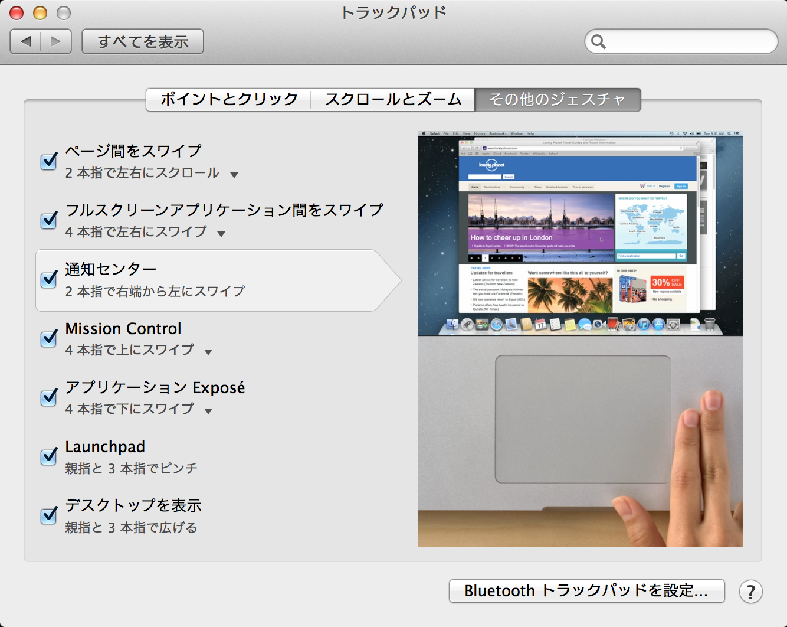

Information Technology Literacy
目次
1 (少しはマシな)パスワードの作り方
1.1 全てのサイトで同じパスワードを使ってはいけない
Google, iCloud, Dropbox, 楽天, メールサービス…全てのサイトで同じパスワードを使ってはいけない． 万が一どれか1つでも盗まれたら，登録している全てのサービスで自由にログインされてしまうから． しかし，サイトごとに違うパスワードを覚えておくのは大変．だからといって紙にメモしては本末転倒． そこで，以下のような方法でサイトごとに別々のパスワードを作ることをオススメする．
1.2 基本形：基本パスコード + サービス別コード
ここでは，サイト別のパスワードを，基本コード と サービス個別コード で構築する方法を紹介する．
まず，基本パスコードを，例えば， P@ssw()rd とする( 使っちゃダメよ )．
次に，利用するサービスごとの個別コードを，例えば，
| サイト名 | 個別コード |
|---|---|
Ggle | |
| Dropbox | Dbox |
| 東北大学メールサーバー | Thml |
基本パスコード + 適当な記号 + 個別コード
とする．例えば，適当な記号として % を使う場合，
Google には P@ssw()rd%Ggle, Dropbox には P@ssw()rd%Dbox, 東北大学メールサーバーには P@ssw()rd%Thml というパスワードを設定する．
1.3 利点
- サービスごとに全く違うパスワードを覚える必要がない．
- どれか1つのサイトでパスワードが盗まれても，直ちに別のサービスまで危険になるわけではない．
- 基本パスコード，記号およびその組み合わせ方さえ秘密にしておけば，個別コードがリークしても直ちに危険にはならない(むしろ，自分が利用しているサイトをメモしておけば，サイト別パスワードを整合的に更新できる)
1.4 注意点
- 基本パスコードは 6文字以上 で，英語の大文字・英語の小文字・数字が，それぞれ，少くとも1つ は入っていることが望ましい．
- 辞書に載っている単語，人名，地名，およびそれらを「o→0, ()」「i→1 」「a→@」などと変えたものを そのまま使わない．上記の
P@ssw()rdは 使ってはいけない好例 - サイト別パスコードをあまり長くしない．
- パスワード生成用のWebサイトなどは使わない(一見ランダムに見えるだけで，実は法則性があるかもしれない)．
- どうしても思いつかなければ
pwgenを使ってみる．
1.5 アレンジを効かせる
例えば，
- 個別コードを先に書くことにする(eg.
Ggle%P@ssw()rd,Dbox%P@ssw()rd) - 個別コードで基本コードを挟む(eg.
Gg%P@ssw()rd%le,Db%P@ssw()rd%ox) - 記号を変えたり，増やしてみる(eg.
P@ssw()rd@Ggle!,P@ssw()rd@Dbox!)
とすると，さらに堅牢になる．
1.6 覚え易くてセキュアなパスコードの生成
基本パスコードは覚え易くてセキュアであることが望ましい．そんなコードを生成するGPL pwgen という UNIX コマンドを使ってみてはどうでしょう．
http://sourceforge.net/projects/pwgen/
$ brew install pwgen # homebrew でインストール $ pwgen --help # ヘルプを見る $ pwgen -B -v 8 # 少なくとも1つが記号で，見間違い易い文字を使わない8文字のパスコードを生成
1.7 参考になるサイト
- https://www.grc.com/haystack.htm
- あなたのパスワードが総当たり攻撃によって「何秒」で破られるかを示してくれる．総当たり攻撃に対してはパスワードの複雑さよりも長さが重要だとする主張も．
- https://www.grc.com/OffTheGrid.htm
- 紙ベースでサイトごとの堅牢なパスワードを生成する方法．
2 Mac のセットアップ
2.1 まずやること：ソフトウェアアップデート，キーバインドの変更，Trackpad の変更
2.1.1 ソフトウェア・アップデートの実行
Mac に入っている OS が最新のものになっていない場合，後述する機能が使えない可能性があるばかりか，悪意のある攻撃に対する脆弱性が修正されていないかもしれない．
- メニューバー左上のリンゴマーク→ソフトウェア・アップデートを実行
2.1.2 ctrl と caps lock を入れ替える
本研究室では ctrl を多用するので，あまり使わない caps lock と入れ替える．
- システム環境設定→キーボード→修飾キー を開いて設定
2.1.3 spotlight のキーバインドを ctrl + shift + space に変更
デフォルトでは ctrl + space だが，このキーバインドは後述する Emacs で「mark set」の機能に割当てられている．
- システム環境設定→spotlight を開いて設定
2.1.4 Trackpad の設定
- システム環境設定→トラックパッド

2.2 キーボード・ショートカット
- Mac では ⌘ (command), control, shift, option のキーとアルファベットや数字キーを組み合わえることで様々な機能を呼び出せる． http://support.apple.com/kb/HT1343?viewlocale=ja_JP
2.2.1 覚えておくと便利なショートカット
| ショートカット | 機能 |
|---|---|
| ⌘+c | コピー |
| ⌘+v | ペースト |
| ⌘+w | ウィンドウを閉じる |
| ctrl + shift + space | spotlight |
| ctrl + option + space | spotlight を Finder 上で起動 |
| ⌘+h | ウィンドウを隠す |
| ⌘+m | ウィンドウを最小化 |
| ⌘+q | 終了 |
| ⌘+option+esc | アプリケーションの強制終了 |
3 ターミナルの操作に慣れよう
3.1 基本コマンド
3.2 vi の使い方
4 ソフトウェアのインストール方法
Mac ではソフトウェアのインストール方法に3通りある．
- App Store からインストールする
- .app ファイルをアプリケーション・フォルダに移動させる
- .pkg ファイルをダブルクリックする
5 BetterTouchTools のインストールと設定
5.1 BTT の特徴
- Trackpad による様々なジェスチャーを各種機能に設定できる
5.2 インストール方法
5.2.1 マウスを使う場合
- http://www.boastr.de/ から BetterTouchTool.zip をダウンロード
- BetterTouchTool.zip をダブルクリック
- 生成された BetterTouchTool.app を
/Applications/フォルダに移動．
5.2.2 ターミナルだけでやる場合
cd ~/Downloads/
curl -O http://www.boastr.de/BetterTouchTool.zip
unzip -o BetterTouchTool.zip
cp -r BetterTouchTool.app/ /Applications/
rm -r BetterTouchTool.app
5.3 設定例
5.3.1 Global
| ジェスチャー | 機能 | 解説 |
|---|---|---|
| Corner Click Bottom Right | Sleep Display | Trackpadの右下をクリック : ディスプレイをスリープ |
| Three Finger Click | Lookup word under cursor | 3本指クリック: カーソル下の単語を調べる |
| Three Finger Clickswipe Down | Restore old window size | 3本指で下へクリック・スワイプ : ウィンドウのサイズを元に戻す |
| Three Finger Clickswipe Left | Maximize Window Left | 3本指で左へクリック・スワイプ : ウィンドウを画面の左半分にスナップ・最大化 |
| Three Finger Clickswipe Right | Maximize Window Right | 3本指で右へクリック・スワイプ : ウィンドウを画面の右半分にスナップ・最大化 |
| Three Finger Clickswipe Up | Maximize Window | 3本指で上へクリック・スワイプ : ウィンドウを最大化 |
| Three Finger Swipe Up | End (end of the page) | 3本指で上へスワイプ : ページの最後へ（Endと同じ） |
| Three Finger Swipe Down | Home (beginning of the page) | 3本指で下へスワイプ : ページの先頭へ（fn + ←と同じ） |
5.3.2 Safari.app
| ジェスチャー | 機能 | 解説 |
|---|---|---|
| Three Finger Swipe Left | ⌘⇧] | 3本指で右から左へスワイプ : 右のタブへ |
| Three Finger Swipe Right | ⌘⇧[ | 3本指で左から右へスワイプ : 左のタブへ |
6 各種サービスのアカウント作成とユーティリティのインストール
6.1 iCloud (https://www.icloud.com)
6.1.1 特徴
- 5GBのクラウドストレージ．
- MacやiOS デバイス間でMail/Safariのブックマーク/iCalendarを同期させたり，iOSデバイスのデータや設定をバックアップしたりできる．
- GoodReaderを始め，各種iOS Appからのアクセスが容易だが，ローカル・フォルダとの同期は無い．
6.1.2 アカウント作成・ユーティリティ
6.2 Dropbox (https://www.dropbox.com/)
6.2.1 特徴
- 2GBのクラウドストレージ．
- 30日まで 履歴を保存しているので，うっかり上書き・削除してしまっても復元可能．
- ローカルの
~/Dropboxフォルダと自動的に同期． - .emacs, texmf, skk 辞書などの保存には便利．
6.2.2 アカウント作成・ユーティリティ
- http://db.tt/pqpSl9b からアカウントを作成
- https://www.dropbox.com/downloading?src=index からユーティリティをダウンロード．
6.3 Sugarsync (
6.3.1 特徴
- 5GBのクラウドストレージ．
- 任意のフォルダを共有可能，Drag & Drop で共有可能など，閲覧・編集の許可など，Dropbox よりもファイルの共有機能を細かく設定可能．
6.3.2 アカウント作成・ユーティリティ
- http://www.sugarsync.jp/howto/index.html を参考に．無料で十分．
6.4 Cloud.app
6.4.1 特徴
- ファイル共有機能に特化
- 1日に10ファイルまで，各ファイル
6.5 Github
6.5.1 特徴
6.6 Bitbucket
6.7 Evernote (必須ではない)
6.8 Github / Bitbucket に SSH で接続する
6.8.1 公開鍵と秘密鍵の作成
~/.sshにSSH用の公開鍵と秘密鍵を作るmkdir ~/.ssh # ssh用のディレクトリを作る cd ~/.ssh ssh-keygen -t rsa -f id_rsa # id_rsa という秘密鍵と id_rsa.pub という公開鍵を作る chmod 700 ~/.ssh chmod 600 ~/.ssh/id_rsa.pub
6.8.2 Bitbucket に SSH の公開鍵を登録する
- Bitbucket の右上のアバターから「Manage account」を選ぶ
- 左側のメニューから「SSH keys」を選び，「Add Key」をクリック
- 適当なラベルを与えたあと，公開鍵を Keys にコピーする．ターミナル上で
pbcopy < ~/.ssh/id_rsa.pub
としてから Key のところでペーストすると簡単．
~/.ssh/config/に以下を記載Host bitbucket User git Port 22 Hostname bitbucket.org IdentityFile ~/.ssh/id_rsa TCPKeepAlive yes IdentitiesOnly yes
6.8.3 Github に SSH の公開鍵を登録する
- github.com の右上のユーザー名をクリックし「Edit Your Profile」を選ぶ
- 左側のメニューから「SSH Keys」を選び，「Add SSH Key」をクリック
- 適当なラベルを与えた後，公開鍵を Key にコピーする.ターミナル上で
pbcopy < ~/.ssh/id_rsa.pub
としてから Key のところでペーストすると簡単．
~/.ssh/config/に以下を記載Host github User git Port 22 Hostname github.com IdentityFile ~/.ssh/id_rsa TCPKeepAlive yes IdentitiesOnly yes
7 Homebrew によるパッケージ管理
8 Emacs — 最強のエディタ
8.1 基本コマンド
8.2 dired — ファイル管理
8.3 el-get — Lisp 管理
8.4 バッファ & ウィンドウ ~ フレームによる作業
9 LaTeX
9.1 TeXLive 2012 のインストール
9.2 コンパイルしてみる
10 org-mde
10.1 メモを書く
10.2 ワーキングペーパーを書く
10.3 プレゼン資料を作る
11 Git / magit / sourcetree
11.1 インストール
- homebrew で簡単にインストールできる
$ brew install git
11.2 基本コマンド
git status, 現在の状態を確認 git branch, 現在のブランチを確認 git log, 過去の履歴を確認
git add file1 file2 file3…, ファイルをインデックスに追加 git commit -m "message", 'message' をつけてコミットする git rm file1 file2 file3…, ファイルを消去し，インデックスからも削除 git rm –cached file1 file2…, ファイル本体は消去せず，追跡から外す
11.3 ローカルでの作業管理
以下では，read_n_line というディレクトリ下をGitで管理する場合を想定する．
ここでは，C++を用いて「指定されたテキストの最初のn行を表示させるプログラム」を作成する．
11.3.1 セットアップ
$ mkdir ~/workspace/read_n_line # read_n_line ディレクトリを作成して $ cd ~/workspace/read_n_line # 移動する $ git init # 初期化を行う Initialized empty Git repository in /Users/username/read_n_line/.git/
11.3.2 最初のファイルとコミット
まずは
11.3.3 日常的なワークフロー
- 作業開始日時のブランチを作り，checkout する
git checkout -b 130401_0930